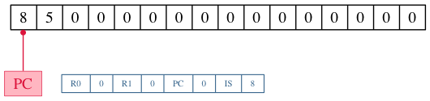
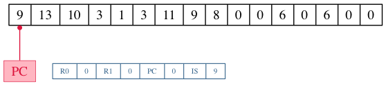
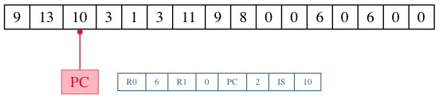
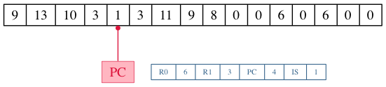
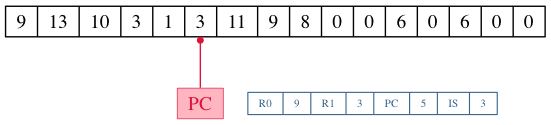
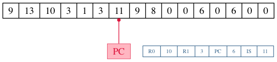
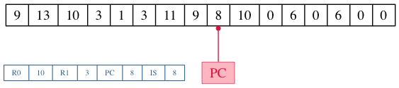

4917 微處理器是 澳大利亞新南威爾斯大學 (UNSW) 教授 Richard Buckland 所開授課程 COMP1917 裡面所講述的一個專為該課程設計的虛擬微處理器，此微處理器並未在市面上販 售。
4917 是一個 4-bit，具有 4 個暫存器以及 16 個記憶體空間 (4bit * 16) 的微控器，屬 於 Von Newman 架構 (程式和資料儲存在同一份記憶體), 和當今電腦、手機使用的 64-bit CPU 相比相差甚遠，但是非常適合用來學習一個 CPU 的運作以及模擬器的撰寫。
在這篇文章中，我們將使用 Clojure 1.7 的新功能 Reader Conditionals 一次實現 node.js (clojurescript) 以及 JVM (clojure) 的版本。
4917 的暫存器 (Register)
4917 共具有 4 個暫存器，分別為 R0, R1, PC, IS, 其用途如下表
| 暫存器 (Register) | 用途 |
|---|---|
| R0 | 暫存資料用 |
| R1 | 暫存資料用 |
| PC | 儲存目前指向記憶體的位址 |
| IS | 儲存目前執行的指令集 (Instruction Set) |
有些人的 4917 模擬器會將 PC (Program Counter) 命名為 IP (Instruction Pointer)， 這個名稱比較常用在 x86 的 CPU 上，但是用途是相同的。
從指令集認識 4917
4917 共有 16 種指令，其中 0 ~ 7 這一類的指令屬於 1-byte 指令，不接受而外的參數， 而 8 ~ 15 這幾個操作碼則會接受 Program counter (或稱為 Instruction pointer) 所指 向的下一個目標作為資料 <data> 來進行接下來的動作，屬於 2-byte 指令。
實際上 4917 為 4-bit 微處理器，其使用的 memory 或是暫存空間都是以 4-bit (1byte = 8bit) 作為單位的，本文參考部分文章的描述，仍以 byte 當作他的單位。 (實際上 4-bit 稱作 nibble)
下表列出了其指令與含義:
1-byte 指令
| 指令 (op code) | 含義 |
|---|---|
| 0 | 結束程式 |
| 1 | R0 和 R1 相加，結果存入 R0 |
| 2 | R0 和 R1 相減，結果存入 R0 |
| 3 | R0 數值加一 |
| 4 | R1 數值加一 |
| 5 | R0 數值減一 |
| 6 | R1 數值減一 |
| 7 | 響蜂鳴器 |
2-byte 指令，指令後面的 byte 的內容以 <data> 表示
| 指令 (op code) | 含義 |
|---|---|
| 8 | 印出 <data> 內容 |
| 9 | 從位址 <data> 讀取資料存入 R0 |
| 10 | 從位址 <data> 讀取資料存入 R1 |
| 11 | 將 R0 內容存入 位址 <data> 內 |
| 12 | 將 R1 內容存入 位址 <data> 內 |
| 13 | 將 PC 指向 位址 <data> (即 JUMP 命令) |
| 14 | 如果 R0 為 0，將 PC 指向 位址 <data> |
| 15 | 如果 R0 不為 0, 將 PC 指向 位址 <data> |
從範例來看 4917 的指令運作
我們可以使用簡單的範例來了解 4917 的運作，假設目前的記憶體內容如下:

這樣 4917 會怎樣運作呢? 首先因為 PC 指向了 8，而 8 是 2-byte 指令，代表印出下一
個位置 (PC + 1) 的內容，因此會在終端機上顯示 5 ，接著程式遇到了 0, 結束這一回
合。
很簡單對不對?我們來看比較難一點點的範例，假設目前記憶體內容如下:

首先剛開始的指令 9 是 2-byte 指令，因此我們必須將 13 當作其參數一起考量，而 [ 9, 13 ] 則代表著
R0 = memory[13] = 6

而接下來的命令 10 同樣也是 2-byte 指令，因此必須將 3 當作其參數一起來看，[ 10, 3 ] 則代表著
R1 = memory[3] = 3

再接下來我們碰到了 1 則是 1-byte 命令，因此目前運作如下
R0 = R0 + R1 = 6 + 3 = 9

再接下來我們碰到了 3 是 1-byte 命令，因此目前運作如下
R0 = R0 + 1 = 9 + 1 = 10

在接著則是命令 11，這是一個 2-byte 命令，會將 R0 的內容寫入到其參數 (9) 所在的記 憶體位址，因此經過這個命令後，記憶體變成如下

最後一個遇到的命令是 8 代表將下一個資料印出來，因此我們就會看到 10 顯示在終端機 上了，也就是說，剛剛的程式進行了以下的運作
R0 = 6 R1 = 3 R0 = R0 + R1 R0 = R0 + 1 print R0
建立我們的 Clojure/Clojurescript 專案
了解到了 4917 的運作模式以及指令集後，我們可以開始寫程式囉，首先使用 lein 建立我們的專案
coldnew@Rosia ~ $ lein new emulator-4917
由於預設的 lein 專案缺少很多東西，因此我們必須一一添加 (或是你可以使用比較合適的
樣板），首先在 project.clj 裡面修改部分設定成如下
(defproject emulator-4917 "0.1.0-SNAPSHOT" ;; skip ... :source-paths ["src"] :dependencies [[org.clojure/clojure "1.7.0"] [org.clojure/clojurescript "0.0-3308" :scope "provided"]] :plugins [[lein-cljsbuild "1.0.6"]] :min-lein-version "2.5.1" :cljsbuild {:builds [{ :source-paths ["src"] :compiler {:output-to "target/emulator-4917.js" :output-dir "target" :source-map "target/emulator-4917.js.map" :target :nodejs :optimizations :none :pretty-print true}}]} :aot [emulator-4917.core] :main emulator-4917.core)
請注意到由於本篇文章將使用 Clojure 1.7 的新功能 Reader Conditionals ，因此
Clojure/Clojurescript 版本必須依照以上設定或選用更高版本，並且 lein 版本也必須
升級到最新版 2.5.1.
而在這個 project.clj 裡面，由於我們為了讓 Clojurescript 編譯速度加快，我們採用
了 none 最佳化，因此必須另外增加一個 run.js 來協助執行編譯出來的 javascript，
其內容如下
// http://stackoverflow.com/questions/25803420/how-to-compile-clojurescript-to-nodejs try { require("source-map-support").install(); } catch(err) { } require("./target/goog/bootstrap/nodejs.js"); require("./target/emulator-4917.js"); require("./target/emulator_4917/core"); emulator_4917.core._main(process.argv[2]); // passing argument
另外，我們必須將 lein 產生出來的 src/emulator_4917/core.clj 改名為
src/emulator_4917/core.cljc 這樣我們才能夠順利使用 Reader Conditionals 這個功
能。
建立初始樣板
我們首先先建立我們程式的雛形，讓其根據不同條件選擇要載入的 library 或是預先執行的方法，我們修改 src/emulator_4917/core.cljc 成以下
(ns emulator-4917.core (:require #?(:cljs [cljs.nodejs :as nodejs]) #?(:cljs [goog.crypt :as gcrypt]) [clojure.string :as str]) #?(:clj (:gen-class))) ;; enable *print-fn* in clojurescript #?(:cljs (enable-console-print!)) (defn -main [& args] (let [arg1 (nth args 0)] (if arg1 (println "TODO: read binary file and execute it.") (println "Error: Please specify filename.")))) ;; setup node.js starter point #?(:cljs (set! *main-cli-fn* -main))
在上面的樣板中，被 #?() 所包圍的東西會根據不同狀況被解析，這就是 Clojure 1.7
的 Reader Conditionals 功能，我們可以用以下範例來了解他的使用，下面的程式會根據
目前是編譯給 Clojure 還是 Clojurescript 來選擇要執行的項目，如果你今天是用在
Clojure (JVM)上，則其會顯示 Hi, Clojure ，反之若是執行在 Clojurescript
(Node.js, browser) 上，則會顯示 Hi, Clojurescript 。
#?(:clj (println "Hi, Clojure") :cljs (.log js/console "Hi, Clojurescript"))
讀取二進制檔案並解析
為了讓這個模擬器更像模擬器，我們讓他讀取二進制檔案到 memory 去來模擬 CPU 載入 ROM 動作，讀取完成後則將資料變成 Clojure 的陣列，好方便之後的程式運作，也就是說， 假設欲讀取的二進制文件內容如下
coldnew@Rosia ~/emulator-4917 $ hexdump -C examples/bell.bin | head -n 1 00000000 77 70 |wp|
我們要想辦法讀取這份文件，並產生 [7, 7, 7, 0] 這樣的陣列才行，而由於牽扯到
了讀取檔案的運作，這部份一定是要分開 Clojure 與 Clojurescript 的實作。
我們先談談在 Clojure 讀取檔案的作法，理論上我們可以使用 slurp 去讀取檔案，但是由
於 slurp 會將讀取到的內容根據編碼來轉換，因此不適合本文的應用，只好使用 Java 的
方式來讀取二進制檔案囉，我們建立一個 parse-binary-file 函式來讀取檔案並且轉換
成 byte-array。
(defn parse-binary-file "Clojure method to read binary file and convert to byte-array." [file] (with-open [out (java.io.ByteArrayOutputStream.)] (clojure.java.io/copy (clojure.java.io/input-stream file) out) (.toByteArray out)))
而在 Clojurescript 中，因為我們是執行在 Node.js 環境上，可以使用 Node.js 的 fs.readFileSync() 方法來讀取二進制檔案，讀取完成後在用 google Closure library 裡面 的 goog.crypt.stringToByteArray 將其轉換成 byte-array.
(defn parse-binary-file "Clojurescript method to read binary file and convert to byte-array." [file] (-> (nodejs/require "fs") (.readFileSync file "binary") .toString gcrypt/stringToByteArray))
最後，將這兩部份的程式碼整合起來，就會變成如下
(defn parse-binary-file [file] #?(:clj (with-open [out (java.io.ByteArrayOutputStream.)] (clojure.java.io/copy (clojure.java.io/input-stream file) out) (.toByteArray out)) :cljs (-> (nodejs/require "fs") (.readFileSync file "binary") .toString gcrypt/stringToByteArray)))
完成了 parse-binary-file 後，由於這樣產生出來的陣列內容為 [ 0x77, 0x70 ] 和
我們期望的 [ 7, 7, 7, 0 ] 有所落差，因此我們需要另外一個方式將 0x77 變成 [ 7,
7 ] 這樣的組合，我們可以用以下函式來達到這件事情
(defn to-4bit-array "Convert 0xf4 to [f 4]" [s] (let [h (bit-and (bit-shift-right s 4) 0x0f) ; (0xf4 >> 4) & 0x0f => f l (bit-and s 0x0f)] ; 0xf4 & 0x0f => 4 [h l]))
接著，我們使用 map 將 to-4bit-array 套用在 parse-binary-file 得到的結果上
(map to-4bit-array (parse-binary-file file)) ; => [ [7, 7] [7, 0] ]
這樣得到的結果仍舊不是我們想要的，因為他變成了多維陣列，因此我們使用 flatten 將 多維陣列變成一維的
(flatten [ [7, 7] [7, 0] ]) ; => (7, 7, 7, 0)
到此為止，我們完成了讀取二進制檔案並將其變成命令陣列的功能，將其合起來就變成
parse-rom ，我們將用他來讀取二進制檔案並傳送命令陣列給 4917 模擬器處理。
(defn parse-rom [file] (flatten (map to-4bit-array (parse-binary-file file))))
建立 4917 這顆 CPU
在 Clojure 這種函數式的語言中我們要怎樣定義一個 CPU 呢？最簡單的方式就是透過
defrecord 去創建這個 CPU 的狀態，以 4917 來說，他共有四個暫存器(R0, R1, PC, IS)
以及 16 個 4-bit 的記憶體空間，因此我們可以這樣定義他的 State.
(defrecord State [memory r0 r1 pc is])
這樣子我們就可以透過 State 來創建我們的 CPU 狀態，舉例來說如下
(->State (vec (repeat 16 0)) 0 0 0 0) ;; => #user.State{:memory [0 0 0 0 0 0 0 0 0 0 0 0 0 0 0 0], :r0 0, :r1 0, :pc 0, :is 0}
但是直接用 State 創建 CPU 其實不是很優雅的方式，我們可以將他綁到我們自制的
make-cpu 函式去，讓建立 CPU 更簡單
(defn make-cpu ([& {:keys [memory r0 r1 pc is] :or {r0 0 r1 0 pc 0 is 0}}] (State. (vec (take 16 (concat memory (repeat 16 0)))) r0 r1 pc is)))
透過這樣的 make-cpu 函式，假設我們要創建一個預設 r0 為 5, 記憶體內容為 [5, 2,
2] 的 CPU，則可以這樣作
(make-cpu :memory [5, 2, 2] :r0 5) ;; => #user.State{:memory [5 2 2 0 0 0 0 0 0 0 0 0 0 0 0 0], :r0 5, :r1 0, :pc 0, :is 0}
有了建立 CPU 當前狀態的函式後，是時候去定義這 16 個指令集了
定義指令集
前面說到了 4917 這顆 CPU 共有 16 種指令 (0 ~ 15)，因此我們來一個一個定義吧，
指令 0 : 結束程式
首先定義指令 0，當 4917 接收到這個命令後，會結束程式。結束程式的方式，在 Clojure 中我們可以透過
(System/exit 0)
來達成，而在 Node.js 中，則是可以使用 process.exit(0) 來進行
(.exit nodejs/process 0)
因此我們的指令 0 就變成了這個樣子
(defn cmd0 "cmd 0: exit application." [{:keys [memory r0 r1 pc is]}] (println "Terminate application.") #?(:clj (System/exit 0) :cljs (.exit nodejs/process 0)))
指令 1 : R0 = R0 + R1
指令 1 是我們第一個實作指令，首先我們將目前 CPU 的狀態傳送到指令 1 中，再根據需
求透過 make-cpu 建立新的狀態並回傳，由於 PC (Program Counter) 在執行完此命令後
應該要指向下一個記憶體位址，因此要記得增加 PC 的數值，讓 CPU 可以順利指向下一個
位址。
(defn cmd1 "cmd 1: R0 = R0 + R1" [{:keys [memory r0 r1 pc is]}] (make-cpu :memory memory :r0 (+ r0 r1) :r1 r1 :pc (inc pc) :is 1))
指令 2 : R0 = R0 - R1
指令 2 和指令 1 非常相似，唯一的差別在於 :r0 存放的內容是 r0 - r1 的結果。
(defn cmd2 "cmd 2: R0 = R0 - R1" [{:keys [memory r0 r1 pc is]}] (make-cpu :memory memory :r0 (- r0 r1) :r1 r1 :pc (inc pc) :is 2))
指令 3 : R0 = R0 + 1
指令 3 使用類似指令 1 的實作，我們使用 (inc r0) 來進行 r0 + 1 的動作，當然，你
也可以使用 (+ r0 1) 。
(defn cmd3 "cmd 3: R0 = R0 + 1" [{:keys [memory r0 r1 pc is]}] (make-cpu :memory memory :r0 (inc r0) :r1 r1 :pc (inc pc) :is 3))
指令 4 : R1 = R1 + 1
指令 4 和指令 3 非常相似，只是將目標暫存器從 r0 改成 r1 而已。
(defn cmd4 "cmd 4: R1 = R1 + 1" [{:keys [memory r0 r1 pc is]}] (make-cpu :memory memory :r0 r0 :r1 (inc r1) :pc (inc pc) :is 4))
指令 5 : R0 = R0 -1
使用類似指令 3 的實作模式，我們使用 (dec r0) 來進行 r0 - 1 的動作，當然，你
也可以使用 (- r0 1) 。
(defn cmd5 "cmd 5: R0 = R0 - 1" [{:keys [memory r0 r1 pc is]}] (make-cpu :memory memory :r0 (dec r0) :r1 r1 :pc (inc pc) :is 5))
指令 6 : R1 = R1 -1
指令 6 和指令 5 非常相似，只是將目標暫存器從 r0 改成 r1 而已。
(defn cmd6 "cmd 6: R1 = R1 - 1" [{:keys [memory r0 r1 pc is]}] (make-cpu :memory memory :r0 r0 :r1 (dec r1) :pc (inc pc) :is 6))
指令 7 : 響鈴
若 4917 真的有實體的話，指令 7 的功用應該是響蜂鳴器才對，這邊使用 println 將訊息印
出來作為替代，記得要增加 PC (Program Counter) 的數值。
(defn cmd7 "cmd 7: Ring bell" [{:keys [memory r0 r1 pc is]}] (println "Ring the bell!!") (make-cpu :memory memory :r0 r0 :r1 r1 :pc (inc pc) :is 7))
指令 8 : 印出 <data>
指令 8 就好玩一點點了，我們可以透過 nth 命令，取得記憶體陣列(memory)的某個位置的 數值
(nth [ a b c d ] 2) ; => c
由於 <data> 是在 PC 指向的位址的下一格，因此印出 <data> 的方式就變成這樣
(println (nth memory (inc pc)))
了解這點後，我們就可以實作我們的 cmd8 了，要注意的事情是，這一類 2-byte 命令執行
完後，PC (Program Counter) 的數值是 +2 ，而不是和指令 1 ~ 7 那樣的只是遞增 PC
數值而已。
(defn cmd8 "cmd 8: Print <data>" [{:keys [memory r0 r1 pc is]}] (println (nth memory (inc pc))) (make-cpu :memory memory :r0 r0 :r1 r1 :pc (+ pc 2) :is 8))
指令 9 : 從位址 <data> 讀取資料存入 R0
指令 9 中，我們必須知道 <data> 得內容後，再根據其數值去找尋記憶體位址的內容，並 將其存入 R0 中，而取得 <data> 內容的方式在指令 8 時說過了，使用 nth 可以達成
(nth memory (inc pc))
因此取得 <data> 後，我們可以再使用 nth 一次，來取得記憶體中第 <data> 個內容
(nth memory (nth memory (inc pc)))
因此最後的 cmd9 的實作就是這個樣子:
(defn cmd9 "cmd 9: Load value from <data> to R0" [{:keys [memory r0 r1 pc is]}] (make-cpu :memory memory :r1 r1 :pc (+ pc 2) :is 9 :r0 (nth memory (nth memory (inc pc)))))
指令 10 : 從位址 <data> 讀取資料存入 R1
指令 10 和指令 9 很像，只是將目標轉換成 R1 而已，我們可以參考指令 9 進行實作。
(defn cmd10 "cmd 10: Load value from <data> to R1" [{:keys [memory r0 r1 pc is]}] (make-cpu :memory memory :r0 r0 :pc (+ pc 2) :is 10 :r1 (nth memory (nth memory (inc pc)))))
指令 11 : 將 R0 內容存入 位址 <data> 內
現在我們知道了 nth 可以用來取得陣列中某一位置的內容，那我們要怎樣更新陣列的內容 呢?這時候就是 assoc 出場的時候啦! assoc 用在陣列的時候，可以根據你提供的位置以及 新的內容，產生出修改後的陣列
(assoc [0 0 0 0] 1 5) ; => [0 5 0 0] (assoc [0 0 0 0] 4 6) ; => [0 0 0 0 6]
而從前面的指令運作，我們知道 <data> 的內容是這樣取得的
(nth memory (inc pc))
將這兩個概念合併，就得到我們的指令 11 得實作囉～
(defn cmd11 "cmd 11: Store R0 into <data> position" [{:keys [memory r0 r1 pc is]}] (make-cpu :memory (assoc memory (nth memory (inc pc)) r0) :r0 r0 :r1 r1 :pc (+ pc 2) :is 11))
指令 12 : 將 R1 內容存入 位址 <data> 內
指令 12 和指令 11 非常相似，只是將來源暫存器從 r0 改成 r1 而已。
(defn cmd12 "cmd 12: Store R1 into <data> position" [{:keys [memory r0 r1 pc is]}] (make-cpu :memory (assoc memory (nth memory (inc pc)) r1) :r0 r0 :r1 r1 :pc (+ pc 2) :is 12))
指令 13 : 將 PC 指向 位址 <data> (即 JUMP 命令)
指令 13 其實就是一般 CPU 都會有的 JUMP 命令，透過更改 PC (Program Counter) 的
位址，來讓 CPU 去讀取不同記憶體位址。
(defn cmd13 "cmd 13: jump to address <data>" [{:keys [memory r0 r1 pc is]}] (make-cpu :memory memory :r0 r0 :r1 r1 :pc (nth memory (inc pc)) :is 13))
指令 14 : 如果 R0 為 0，將 PC 指向 位址 <data>
指令 14 很單純，我們比對傳入的 r0 數值，若是 0 的話則將 PC (Program Counter) 調
整為 <data>，反之則進行 pc + 2 的動作，而判斷數值是否為 0，在 clojure 可以使用
zero? 進行判別
(zero? 0) ; => true (zero? 3) ; => false
因此我們指令 14 的實作就這樣完成了
(defn cmd14 "cmd 14: jump to address <data> if R0 == 0" [{:keys [memory r0 r1 pc is]}] (make-cpu :memory memory :r0 r0 :r1 r1 :pc (if (zero? r0) (nth memory (inc pc)) (+ pc 2)) :is 14))
指令 15 : 如果 R0 不為 0, 將 PC 指向 位址 <data>
指令 15 其實和指令 14 一樣，我們只要調整 if 判斷式參數的順序就夠了，如果 R0 為
0，則進行 pc + 2 ，反之則將 PC (Program Counter) 內容改為 <data> 數值。
(defn cmd15 "cmd 15: jump to address <data> if R0 != 0" [{:keys [memory r0 r1 pc is]}] (make-cpu :memory memory :r0 r0 :r1 r1 :pc (if (zero? r0) (+ pc 2) (nth memory (inc pc))) :is 15))
建立執行指令的迴圈
當指令集完成後，是時候執行一個迴圈，不斷的執行記憶體內的命令直到結束，在這邊我們 的迴圈直接使用 recur 來完成，recur 是 Clojure 迴圈的一個方式，基本上就是讓函數自己 呼叫自己，直到結束，假如我們要實作倒數計時器，則可以這樣寫
(defn countdown [n] (if (zero? n) (println "finished!") (do (println n) (recur (dec n))))) (countdown 2) ;; => 2 ;; => 1 ;; => finished!
上面的 countdown 命令，會自己呼叫自己直到輸入的參數為 0 為止，依照這個概念我們執
行指令集的迴圈，可以寫成下面這樣，實際根據指令進行執行的部分則由 execute 函式
完成。由於此 CPU 的指令 0 即代表 終止程式 ，因此我們在此並未額外判斷要結
束 recur 回圈的條件。
(defn run [command] (let [cpu (execute command)] ;; (print cpu) ;; for debug only (recur cpu)))
而在 execute 函式中，我們使用了 try … catch 來確保執行的狀態不會出錯，注意到
Node.js 在 Exception 的地方和 Clojure 不同，要使用 js/Error 來替代，假設進入
到了 catch 的區塊，則回傳 0 給 curr 變數，讓他進入到 default 的命令，在這邊就
是 cmd0 ，也就是說一旦程式出錯，就強行終止程式。
(defn execute [state] (let [curr (try (nth (:memory state) (:pc state)) (catch #?(:clj Exception :cljs js/Error) _ 0))] ;; (println state) (case curr ;; 1-byte instruction 1 (cmd1 state) 2 (cmd2 state) 3 (cmd3 state) 4 (cmd4 state) 5 (cmd5 state) 6 (cmd6 state) 7 (cmd7 state) ;; 2-byte instruction 8 (cmd8 state) 9 (cmd9 state) 10 (cmd10 state) 11 (cmd11 state) 12 (cmd12 state) 13 (cmd13 state) 14 (cmd14 state) 15 (cmd15 state) ;; default (cmd0 state))))
進行最後的修改
我們可以丟幾道簡單的程式讓 4917 模擬器執行看看
(run (make-cpu :memory [ 7 0 ])) ;; => Ring the bell!!
或是讓他印出 5 這個數字
(run (make-cpu :memory [ 8 5 ])) ;; => 5
確認模擬器執行成功後，是時候修正我們得 main 方法了，調整成如下就完成整個程式囉 ~
(defn -main [& args] (let [arg1 (nth args 0)] (if arg1 (run (make-cpu :memory (parse-rom arg1))) (println "Error: Please specify filename."))))
取得完整程式碼與執行程式
本篇文章的完整程式碼已經放置於 GitHub 上，你可以使用以下方式取得程式碼
git clone https://github.com/coldnew/emulator-4917.git
而在 examples 資料夾共放了以下幾種 4917 的範例二進制程式
| 檔案名稱 | 功能說明 |
|---|---|
| countdown.bin | 從 5 開始倒數計數到 1 |
| countup.bin | 從 0 開始不斷往上數 |
| bell.bin | 響三次鈴聲 |
| calculate_6+3+1.bin | 計算 6 + 3 + 1 |
執行程式 (JVM)
若要使用 JVM 來執行本篇文章的程式，則可以直接使用 lein run 進行
lein run -- examples/countdown.bin
或是你也可以透過 lein uberjar 功能將其打包成 .jar 檔案再執行
lein uberjar java -jar target/emulator-4917-0.1.0-SNAPSHOT-standalone.jar examples/countdown.bin
執行程式 (Node.js)
本篇文章預設是使用 none 最佳化編譯, 因此需透過 run.js 來協助執行程式
node run.js examples/countdown.bin
你也可以修改 project.clj 將其變成如下
:optimizations :advanced :pretty-print false
接著重新編譯就可以獲得最佳化(並且沒人看得懂的) javascript 了，執行方式如下:
lein cljsbuild once node target/emulator-4917.js examples/countdown.bin